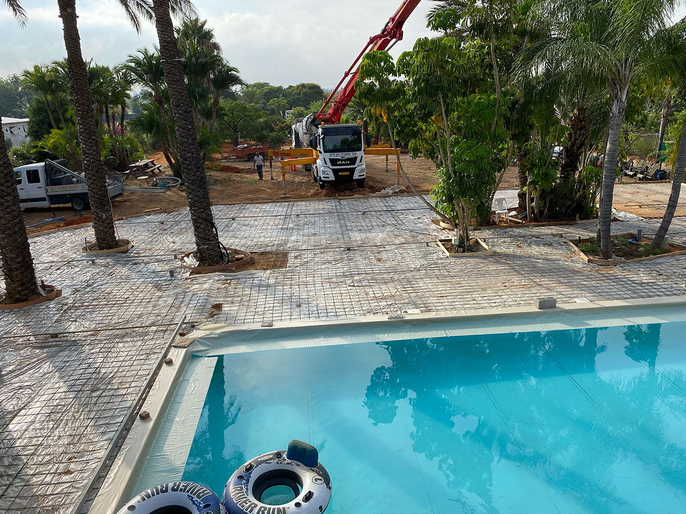
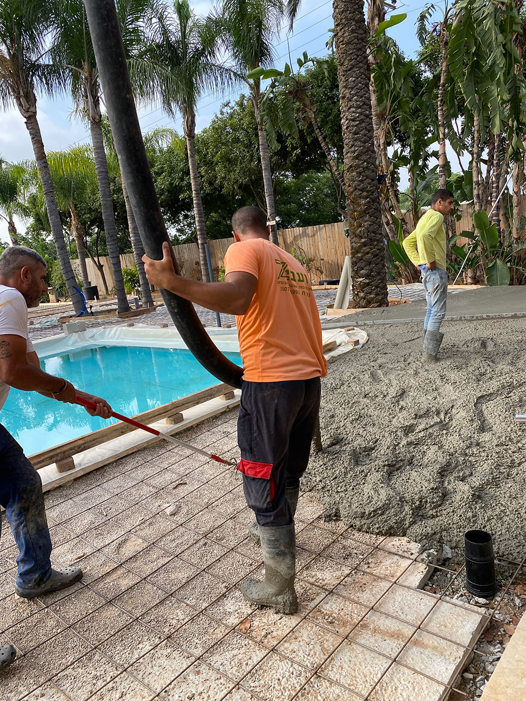
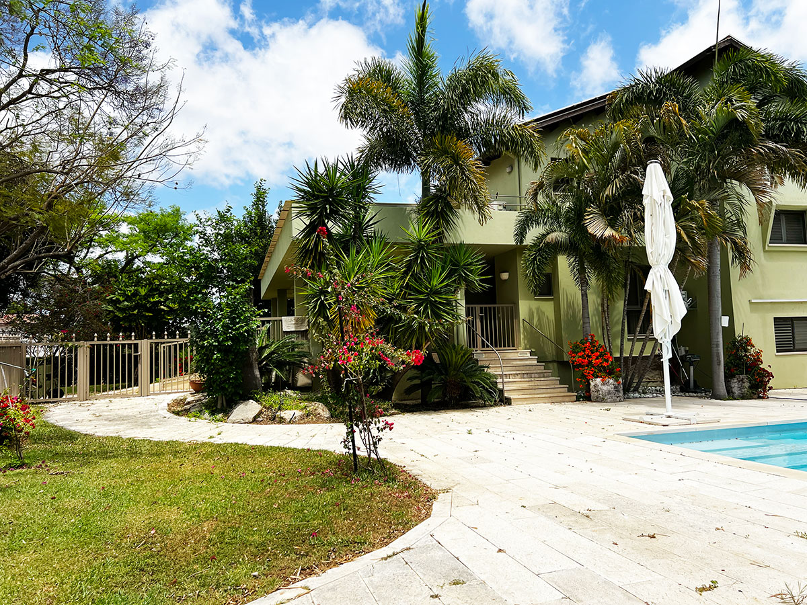

תכנון בריכות שחייה ופיתוח שטח לבית פרטי
בריכה, דק, שבילים, יציקות ותשתיות חוץ הם לא רק תוספת יפה לחצר. הם חלק מתכנון הבית כולו: הגישה, הניקוז, השיפועים, החיבור לפנים הבית, השימוש היומיומי וההיתר הנדרש לפי מצב הנכס והעבודה.
רחובות, יבנה, נס ציונה, גדרה, גאליה, גני יוחנן, טל שחר, כפר הנגיד, בית עובד, עשרת, קדרון, מזכרת בתיה והסביבה.
בריכה היא חלק מתכנון הבית, לא פריט שמוסיפים בסוף
כשמתכננים בריכה או פיתוח חוץ, חשוב לראות את כל התמונה: איפה עוברים, מה רואים מהסלון ומהמטבח, איך נכנסים לבריכה, איפה יושבים, מה קורה עם ניקוז, תאורה, תשתיות, פרטיות, צמחייה וחיבור לחומרים של הבית.
המטרה היא לא רק “לעשות בריכה”, אלא ליצור חוץ שעובד נכון עם הבית, עם ההיתר ועם החיים בפועל.
דוגמה מהשטח: בריכה, יציקות ופיתוח חוץ
בתמונות אפשר לראות עבודות פיתוח סביב בריכה, הכנת תשתיות, יציקות, שבילים ואזורי חוץ. זה בדיוק השלב שבו החלטות קטנות בשטח משפיעות על התוצאה הסופית.


תוצאה סופית: בריכה כחלק ממרחב אירוח פתוח ונעים
אחרי שלבי הביצוע, הבריכה והחוץ צריכים להרגיש טבעיים לבית: אזור נקי, מזמין, בטוח, עם מעבר נוח, פרופורציות נכונות וחיבור בין אזורי הישיבה, הצמחייה והמבנה.



מה חשוב לבדוק לפני שמתחילים?
היתר וזכויות
האם העבודה דורשת היתר, מה מותר לפי התב״ע, ומה מצב ההיתרים הקיימים בנכס.
ניקוז ושיפועים
מים בחוץ לא סולחים. תכנון נכון מונע הצפות, רטיבות ובעיות סביב הבית.
חיבור לבית
איך הבריכה, הדק והשבילים מתחברים למטבח, לסלון, לכניסה ולחצר.
תשתיות ובעלי מקצוע
חשמל, אינסטלציה, תאורה, קבלן, יועצים ותיאום בין כל מי שנכנס לשטח.
איך אני יכולה לעזור?
אני מחברת בין תכנון, עיצוב פנים, פיתוח חוץ והבנה מעשית של ביצוע בשטח. אפשר לפנות אליי לפני היתר, בזמן תכנון הבריכה או לפני שמתחילים עבודות פיתוח, כדי לבדוק איך נכון לחבר את החוץ לבית ולתקציב.
המידע בעמוד זה כללי בלבד ואינו מהווה ייעוץ משפטי, שמאי, הנדסי או תכנוני מחייב. יש לבדוק כל מקרה לפי תיק מידע, תב״ע תקפה, היתרים קיימים, דרישות הוועדה המקומית ואנשי מקצוע מוסמכים.